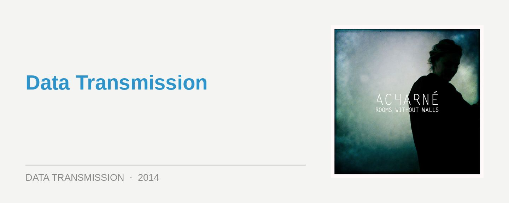

Acharné – Rooms Without Walls EP
Acharné – Rooms Without Walls EP
Label: Seppuku Records
Release: Out Now
Seppüku Records is a new boutique label based out of Berlin that launched with the minimum of fuss in January, drawing attention with its debut Doubt EP from the enigmatic Acharné. And the label itself is equally enigmatic; steering clear of PR hype, it launched with the mission of exploring “the sound of uneasy futurism,” the sonic contrasts between light and dark.
The Doubt EP impressed because it eschewed the predictable DJ tools, featuring a 50/50 split of dancefloor techno and subdued ambience. As it turns out, this was merely the warmup for Rooms Without Walls, which sees Acharné exploring similar territory, but with more conceptual scope and precision this time. Even more removed from a dancefloor focus, it plays out more like a mini album than a collection of singles.
Musically, Acharné plays with a series of Indian and Middle Eastern vocal samples, which are flipped over a wealth of stark electronic ambience. It’s the contrasts that deliver the impact; melody mashed with brash harshness, and noise clashing with brooding silence.
The opening Tombs Master is pure ominous ambience, with a faint Indian chant rising through a thick wall of sound; before tribal percussion suddenly and surprisingly cuts through the silence on Rice and Tears, a bassline rumble bringing the emotion to an early peak.
The title track is the EP’s most powerful moment; dropping back into the ambience, the calm is broken by a piano twinkle that sounds out live, unevenly, as a wall of uneasy sound builds behind it. Meanwhile, Helsinki Trust sees Acharné finally diving into the 4/4 beats with a searing slice of industrial techno that’s sonically rich and robust, while the energy peaks again with Budget Toxoligy; grinding experimental electronica wrapped up in a stompy, infectious groove.
Rooms Without Walls is an extremely effective blend of haunting ambience and richly thematic electronica, and the juxtapositions resonate powerfully. This is far more than a dancefloor producer dithering around with downtempo ideas. Powerful, emotive, evocative, consistent.